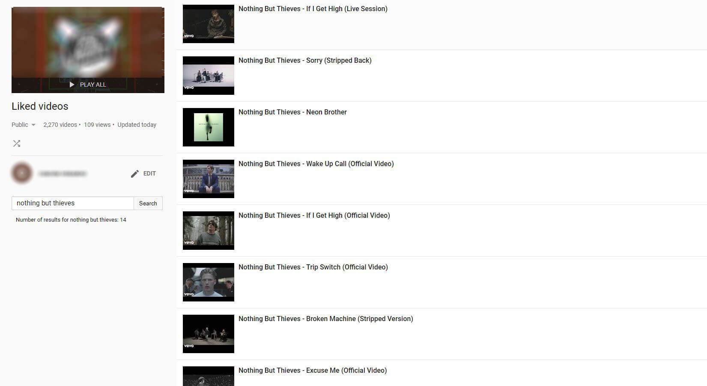

Shortly about:
-
Search within public/private playlist - as far as you not going to search through your private playlist, you can to not authorize. Keep your data away from me, haHaa! (I do not get it anyway);
-
Open sourced - See exactly what is going on or help me to improve;
-
See stats about your search - partly implemented, working on it;
-
Smart search - use "-" sing etc. to exclude some word from results - in development;
-
Set settings for searching - open in current/new tab, search for string/any of words/every word - in development;
-
Sharing your statistic results through social networks - in development;